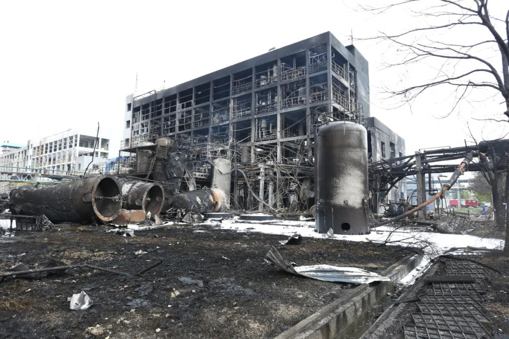

湖北省安办通报仙桃蓝化有机硅公司闪爆事故
2020年8月3日17时30分左右，仙桃市西流河镇蓝化有机硅有限公司甲基三丁酮肟基硅烷车间发生闪爆事故，致6人死亡，4人受伤。事故发生后，应急管理部、省委省政府领导作出批示，要求全力救援救治，迅速查明事故原因，坚决依法处理并吸取事故教训，严肃查处整治工作不落实问题，严防发生重特大事故。为彻底查清事故原因，认真吸取事故教训，严肃追究事故责任，省安委会将对此起事故提级调查。

据初步分析，导致事故的直接原因是操作工在清理分层塔内积液时，没有全面辨识风险，没有严格按停车安全规程操作。该起事故表明企业安全管理混乱是导致事故的主要原因，集中表现在安全管理制度不落实，形式主义、企业官僚主义泛滥，教训极其深刻。
当前正值高温酷暑，暴雨、雷电等极端天气较多，极易导致危险化学品行业生产安全事故。受新冠疫情和汛情双重影响，多数化工企业安排在八月份集中开展检维修，开停车、特殊作业、非常规作业频繁，安全风险集聚。为进一步做好当前危险化学品安全生产工作，特要求如下:
一、严格特殊作业管理。部分企业对特殊作业管理走形式、搞变通，甚至出现“三违”等现象，这种状况必须立即改变。各地各企业要严格执行《化学品生产单位特殊作业安全规范》要求，重点加强对动火、动土、进入受限空间、吊装、临时用电等特殊作业的管控，一律对特殊作业全过程进行视频录像，视频录像由企业保存三个月备查，在省信息平台完善后上传至信息平台。监管部门对视频录像做到逢检必查，违之必纠，责任倒查。
二、加强非常规作业风险管控。非常规作业是相对于常规作业而言的不经常进行，甚至没有安全操作规程的一些作业(包括特殊作业、装置开停车等)。这类作业具有频次少，风险不明确等特点，极易导致事故发生。各企业要对非常规作业实行清单化管理，在企业安全管理机构的领导下，发动全体职工对本企业非常规作业进行梳理，形成本企业非常规作业清单，对每项非常规作业进行风险辨识，制定和完善安全操作规程及应急处置措施，归纳建档。在实施非常规作业前，必须认真学习风险辨识内容，预知各类风险，了解风险场景;在作业实施过程中，必须严格执行安全操作规程，发现异常情况，采取应急处置措施;作业完成后，必须对作业过程进行分析总结，分析总结成果反过来完善清单。坚决做到清单上没有的作业，必须先编制清单后作业，杜绝清单上没有的各类非常规作业实施。各地各部门要迅速部署此项工作，指导企业推进非常规安全作业清单管理法，推行过程中要发挥企业的主动性和职工的参与性，严禁为应付检查，简单的委托技术服务机构编制清单，一经发现严肃处理，坚决剔除“搞形式、走过场”这颗安全管理毒瘤。
三、强化特殊时期安全管理。各地各部门要进一步加强领导，深入扎实开展安全专项整治，要把制度落实作为企业安全管理和安全监管执法的重点，持之以恒抓落实。企业要强化防火、防水防潮、防爆、防雷、防静电、防中毒等多项措施，加强遇水反应和高温易分解化学品安全管理，落实设施设备定期检查和维修保养制度。全面强化岗位员工“四知”能力提升，严格劳动纪律，禁止串岗，严厉查处打击“三违”行为。分析把握高温时段各类生产装置的规律特点和从业人员生理心理特征，采取有效措施防止事故发生。省安办成立两个事故警示教育宣传督导组，分赴危化企业风险较高地区，开展事故警示教育和督导，将惨痛的事故教训带进企业，督促企业严格落实各项安全生产制度。
请各地安委办迅速将本通知传达到辖区内各危险化学品(化工)企业，并督促企业抓好贯彻落实。
当前，全国各地在开展危化品专项整治活动，山东省对各类整治检查活动发现的问题和隐患进行归纳梳理发现，危化品企业主要的共性问题和隐患如下：
一、安全基础管理方面
1、部分企业安委会职能发挥不够，安全生产责任制落实不到位。主要体现在：
（1）安全生产委员会决策职能发挥不够，安全生产责任制未做到全覆盖，部分企业安全生产责任制规定的职责部门与企业实际部门设置不完全相符。
（2）《安全生产责任制考核管理制度》未明确对企业负责人安全生产责任制进行定期考核，予以奖惩。
（3）《领导干部现场带班管理制度》未明确带班人员考核部门及考核频次等内容；部分企业主要负责人和各级管理人员未严格履行带班制度，无相关人员签字。
（4）未建立异常工况下应急处理的授权决策机制；部分管理人员职责不符合省政府311号令规定。
2、部分企业制度制定缺失较多，现有管理制度不足以满足现场管理的要求。主要体现在：
（2）未建立安全生产承诺公告制度、应急器材管理与维护保养制度、车间装卸作业时接口连接可靠性确认制度等。
（3）抽查《劳动护品管理细则》，劳动防护用品未制订配备标准，无采购、保管等相应的内容。
（4）抽查《应急预案管理细则》部分内容缺失（如预案的修订，评估内容等）。
3、部分企业变更管理工作开展水平较低，未执行变更管理制度和相关要求，变更风险不可控。主要体现在：
（1）变更管理制度不健全，职工不知道变更管理，不理解变更管理。
（2）变更管理档案不完善，工艺变更中未制定、落实安全风险管控措施，工艺变更中缺少验收程序。
（3）未将生产组织方式和人员等方面发生的所有变化，纳入变更管理制度，无变更的技术基础、可能带来的安全风险等内容。
（4）未建立变更管理制度，未提供变更后相关人员的培训资料。
4、部分企业承包商管理工作开展不到位，管理缺失。主要体现在：
（1）企业的事故管理制度中没有将承包商在本单位内发生的事故/事件纳入企业的事故管理的内容。
（2）未对承包商用工合同、工伤保险、健康证明等进行审查。
（3）未对承包商的安全作业过程进行安全检查。
（4）未保存承包商人员进入作业现场前的现场安全交底记录，未保存承运商人员的入厂安全培训教育记录。
（5）未提供审查承包单位特种作业人员的资格证书和企业建立的承租承包单位人员档案、培训档案、作业票证的相关资料。
（6）未建立合格承包商档案，未将消防维保单位等承包商纳入承包商管理。
5、事故/事件管理不到位。主要体现在：
部分企业未将生产事故征兆、非计划停工、异常工况、泄漏等纳入事故/事件进行管理。
6、部分企业安全培训教育管理流于形式，培训内容和范围不全面。主要体现在：
（1） 培训需求调查表内容不符合要求。
（2）部分企业安全生产年度培训计划中安全生产责任制教育培训工作未将全员纳入，未包含对所有岗位从业人员（含劳务派遣人员、实习学生等）进行安全生产责任制教育培训。
（3）安全培训内容记录过于简单，如对培训的特种设备操作规程内容，无关于操作规程的记录。
（4）安全培训记录未明确学时。
（5）针对特殊作业的安全培训，试卷考试内容针对性不强。
7、部分企业特种作业取证不全或学历不符合要求。主要体现在:
（1）未提供危险化学品特种作业人员的学历证明。
（2）部分企业涉及防爆电气类作业，但企业内未配备相关电气特种作业人员。
（3）部分企业化工自动化控制仪表工、低压电气作业人员配备也较少，不能满足岗位要求。
8、部分企业开停车、试生产管理不规范。主要体现在：
（1）开停车前，企业未进行安全风险辨识分析，未编制安全措施。
（2）未见开停车步骤确认表；未见相关冲洗、吹扫、气密试验记录。
（3）开车前企业未对重要步骤进行签字确认。
（4）无单台设备交付检维修前与检维修后投入使用前的安全条件确认资料。
9、部分企业安全生产投入不符合要求。主要体现在：
（1）《安全生产投入保障生产制度》未按照省政府311号令修订，制度中的列支范围不符合省政府311号令第十七条的规定，如：企业不涉及重大危险源但制度中有“重大危险源评价整改”支出的内容。
（2）2019年安全费用提取计划未按照公司《安全投入保障制度》的要求以2018年实际营业收入为计提依据采用超额累退方式逐月提取。
（3）未为员工缴纳工伤保险或安全生产责任险。
10、部分企业危险化学品管理混乱。主要体现在：
（1）化学品安全技术说明书和化学品安全标签所载明的部分内容不符合国家标准的要求。
（2）建立的危险化学品出入库核查、登记制度不完善。
（3）仓库储存的物品未按照国家有关标准、规范的要求进行存放。
（4）原料库存放的原料未标识原料名称、数量，且与墙的间距不符合要求。
（5）易燃易爆性商品存储库房未设置温湿度计。
（6）采购的危险化学品“一书一签”中的法规信息未及时更新，危化品入库未粘贴危化品安全标签，专用仓库未实行双人收发、双人保管制度。
（7） 危险化学品仓库物品混乱放置，占用消防通道，阻挡消防栓。
二、工艺安全管理方面
1、部分企业工艺运行管理不规范，联锁投用与摘除存在管理漏洞。主要体现在：
（1）部分企业控制室内所有控制指标未标注仪表位号，易造成操作人员误操作。
（2）DCS控制界面未按照设计图纸进行设置，部分参数报警的低低、低、高、高高限值设置不全或设置的报警、联锁值不正确。
（3）DCS控制系统远传显示值与实际值不一致。
（4）DCS控制系统报警以及联锁切断违规拆除。
（5）未按照《关于加强精细化工反应安全风险评估工作的指导意见》（安监总管三〔2017〕1号）的要求，开展反应安全风险评估。
2、部分企业工艺报警分析和处置不及时。主要体现在：
（1）未对工艺报警进行记录，对报警原因不进行分析。
（2）报警台账中无采取的相应处置措施记录。
3、部分企业装卸车工艺操作规程内容不全，可操作性差。主要体现在：
（1）装卸车操作规程普遍缺少对司机、车钥匙、轮档、车辆静置时间等管理要求。
（2）对上部装车初流速缺少控制措施；对现场监护人员无明确要求。
（3）未按照不同物料危险特性提出针对性的控制与应急处置措施。
（4） 危险化学品装卸/运输审核许可证中无接口连接可靠性确认检查项。
（5）未按照不同物料危险特性提出针对性的控制与应急处置措施。
4、部分企业工艺技术管理水平低下，操作规程工艺卡片管理混乱。主要体现在：
（1） 制定的工艺安全信息文件不完善，操作规程的内容不全面，操作规程中缺少物料平衡表、能量平衡表，偏离正常工况的后果、临时操作、应急操作、紧急停车的安全要求、工艺参数一览表（包括设计值、正常控制范围、报警值及联锁值）等内容。
（2）设备位号及控制参数设定值与操作规程中描述不一致。
（3） 在作业现场未存最新版本的操作规程文本，未设置工艺卡片。
三、设备管理方面
1、部分企业爆炸危险场所未按国家标准安装使用防爆电器设备。主要体现在：
（1）爆炸危险场所的监控摄像头、制冷机等设备为非防爆电气设备。
（2）部分电气设备的防爆等级不满足要求，如加氢工艺电机防爆等级为BT4等级，不满足防爆等级要求。
2、部分企业设备综合管理有缺失。主要体现在：
（1）对设备管理认识不足，缺乏统一协调要求。
（2）设备管理制度不完善，缺乏对设备进行预防性检维修的概念。
（3）缺少设备检修计划和方案，缺少对机泵的维护保养要求。
（4）企业的现场设备管理水平不高，管道缺少介质流向、标识。
4、部分企业设备管理制度不全面，台账、记录不完善。主要体现在：
（1）未建立与生产紧密相关的《润滑管理制度》、《巡检管理制度》、《防腐保温管理制度》、《泄漏点管理制度》、《检维修管理制度》、《防腐蚀管理制度》等制度。
（2）未建立易发生泄漏部位的泄漏检测台账、记录。
5、部分企业重点设备设施防腐管理、防泄漏管理不到位，现场设备存在缺陷。主要体现在：
（1）存在易腐蚀的储罐未制定全面检查周期计划。
（2）设备和管线的排放口、采样口等排放部位设置单阀，未采取加装盲板、丝堵、管帽、双阀等措施。
（3）腐蚀性机泵、储罐周边地面未防腐，涉及腐蚀性物料管线阀门未设置防喷溅罩等措施。
（4）储存ⅠⅡ 级毒性液体的储罐未采用密闭采样器，其残液未采用密闭排入专用收集系统，防火堤有裂缝等。
（5）泵、阀门填料有泄漏。
6、部分企业安全阀管理不到位。主要体现在：
（1）安全阀的根部阀无铅封或铅封损坏；溶剂罐区储罐安全阀前截止阀未设锁定措施、未设置“禁止关闭”标志。
（2）环氧乙烷计量罐、反应釜安全阀底部未设置爆破片，安全阀出口管道未充氮。
（3）安全阀放空管高度不满足要求。
7、部分企业大型机组、机泵的管理不到位。 主要体现在：
（1）存在转动部位防护罩缺失或防护面积不足。
（2）机组润滑未执行“五定”、“三级润滑”管理。
四、电气管理方面
1、企业电工特种作业取证不全，缺少高压电工作业或防爆电气作业。主要体现在：
部分企业涉及高压及防爆电气类作业，但企业内未配备相关电气特种作业人员，低压电气作业人员配备也较少。
2、电气设备接地不规范。主要体现在：
（1）电机外壳接地不符合《交流电气装置的接地设计规范》（GB／T50065-2011）的规定。
（2）非金属储罐、循环水冷却塔未设置防雷接地，不符合《石油化工装置防雷设计规范》（GB50650-2009）的规定。
（3）涉及可燃介质的管道法兰跨接不全，车间内部分接地线脱落。
五、仪表管理方面
1、部分企业仪表相关记录不健全。主要体现在：
（1）企业无联锁逻辑图、定期维修校验记录、临时停用记录等技术资料。
（2）储罐液位高、低限报警的逻辑变更未办理审批手续。
（3）未建立回路投用前测试相关记录。
（4）仪表报警和响应处置记录表中报警类别和处置情况填写不具体，如2019年11月610车间多次出现1期HT氮封压力低限报警，处理方式为加强巡检，未有针对性的采取措施。
2、部分企业电气仪表管理制度不健全，执行不到位。主要体现在：
（1）自动化仪表管理制度无DCS变更管理相关制度要求。
（2）未提供安全仪表系统评估报告。
（3）虽然建立了仪表巡检记录，但巡检频次不足。
（4）未提供控制系统检维护记录、检修记录表单。
（5）虽然设置了DCS控制系统，但现场检查过程中发现现场检测元件、执行元件未设置联锁标志警示牌。
（6） 自控联锁未设置权限，随意摘除，未办理相应联锁摘除作业票。
（7）重大危险源罐区DCS系统未设置报警值及连锁；未配备独立的安全仪表系统、未实现紧急切断功能。
（8）现场控制器系统中设置的高低液位报警、高高低低液位联锁进出料切断阀与储罐PID不符。
3、部分企业设置了安全仪表系统，但未提供安全仪表功能的功能性和完整性分级记录，未提供SIL等级验证报告。
4、部分企业可燃、有毒气体检测报警器现场管理不到位。主要体现在：
（1）未对现场报警器进行有效固定。
（2）报警器报警灯锈蚀严重、安装高度不符合规范要求。
（3）报警仪线路故障，信号未连接至气体报警仪控制器。
（4）进入可燃、有毒气体的区域内的人员未佩戴便携式检测仪。
5、部分企业压力表无上下限标识及检验标志或压力表量程选型不当。主要体现在：
（1）蒸汽缓冲罐、仪表气缓冲罐等未设置压力表上下 限标识及检验标志。
（2）压力表所标上限低于实际操作压力。
六、消防应急方面
1、部分企业应急管理体系不完善。主要体现在：
（1）企业仅提供了公司级的应急指挥系统，未提供成立车间级指挥系统相关材料，缺少车间级指挥人员的职责，应急指挥系统缺失。
（2）企业仅编制了《生产安全事故综合应急救援预案》和《专项预案》、《现场处置方案》，未制定现场处置卡。
（3） 企业实施的《安全管理制度》，无《应急器材管理与维护保养制度》；建有《应急物资储备管理制度》，但该制度侧重储备管理，无检查、维护管理相关内容。
2、部分企业应急器材配备不足。主要体现在：
部分岗位未按要求配备应急器材或应急器材数量不足，缺少防爆手电、对讲机、便携式气体报警仪等应急救援器材。
3、部分企业应急器材管理不到位。主要体现在：
（1）应急救援器材现场摆放混乱。
（2）应急器材维护保养不全，缺少部分应急器材的维护和保养记录，如空气呼吸器应检查气瓶压力。
（3）现场抽查部分操作人员穿戴空气呼吸器，部分职工不能现场熟练进行穿戴，佩戴空气呼吸器未检查面罩气密性，未检查气瓶余压报警。
4、部分企业消防管理制度落实不到位。主要体现在：
（1）消防管理制度浮于表面，执行不到位。
（1）消防器材摆放不规范、不科学，影响应急状态下正常使用。
（2）消防器材的日常维护、保养缺失。
（3）消防栓未编号，未采取防冻措施，未就近配置消防水带、扳手。
（4）灭火器、泡沫液未建立更换记录。
（5）冷却水系统未定期检查、喷嘴未建立除锈排渣记录。
（6）消防水泵房未设置应急照明，未设置安全出口标志。
（7）消防报警室未建立报警处置记录。
（8）未提供工艺装置的消防水幕和储罐的水喷淋冷却系统每年定期检查和试用记录。
七、总图方面
1、部分企业存在总平面布置图与现场不一致的问题，如某企业8-DM工艺原设计位于生产车间2，现位于生产车间1（SR02车间）内，位置发生变化；机修车间现为办公楼，功能发生变化；堆场内建设有氯气库，与原设计专篇总图不一致；总图发生较大变化。
2、部分企业仓库之间间距不足，未按照总图设置防火墙。
3、部分企业存在车间与办公楼之间、储罐与防火堤之间、储罐专用泵与储罐间距以及车间与围墙之间间距不足的问题。
八、特殊作业管理方面
1、部分企业作业票证时间不符，逻辑混乱，动火作业票审批时间晚于动火时间。
2、部分企业安全风险较大的设备检维修等危险作业未制定相应的作业程序。
3、部分企业的动火作业票填写不规范，抽查的动火作业票时间内作业中断超过60分钟，未重新分析；动火作业票缺少安全部门和动火作业监督人签字。
4、部分企业《受限空间作业安全管理规定》对作业环境中可燃气体浓度标准的规定不符合GB30871的要求，票证中未按规定每2小时进行一次气体分析。抽查的受限空间作业票氧含量检测频率不足，作业时间为8:30-17:30，只在8:30一次，13:30一次。
5、部分企业特殊作业监护人员职责落实不到位，甚至缺乏作业现场监护。
6、部分企业对作业风险辨识分析不到位，甚至缺少风险辨识分析，安全控制措施缺失。
编写语：
危化品企业安全责任重大，人命关天，容不得半点侥幸和马虎，更不能有任何纰漏和闪失。从全国各地惨痛的安全事故中不难发现，很多事故的发生并不在于制度的缺失，而是责任意识的淡薄。尤其在安全检查中，存在问题不可怕，可怕的是视而不见。河南义马“7·19”重大爆炸事故，近日的黎巴嫩硝酸铵爆炸事故，一起起总是用生命和鲜血来证明，安全问题不能等。各危化品企业相关责任人应对照上述隐患与问题查漏补缺，以敬畏之心扛起安全生产责任。
原文编辑: EHS资讯
原文链接: https://ehsinfo.cn/2020/08/06/仙桃蓝化有机硅公司闪爆事故通报.html
版权声明: 转载请注明出处(必须保留作者署名及链接)